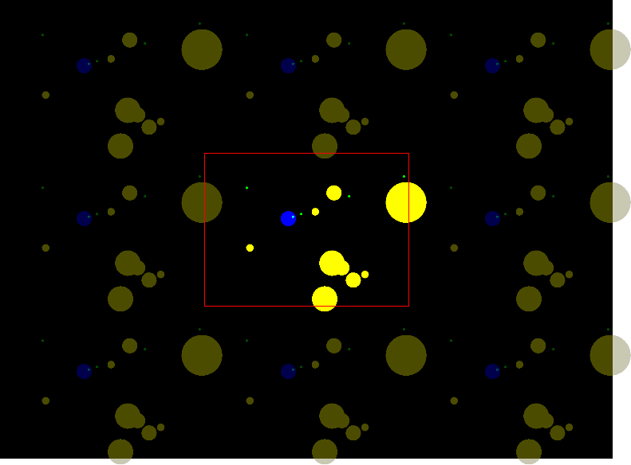
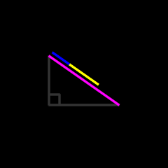
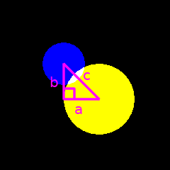
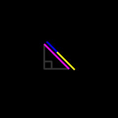
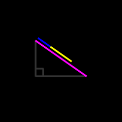
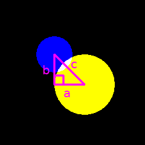
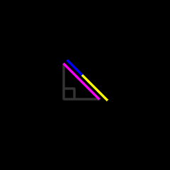

Home page > Pygame Zero tutorials
Asteroids
A tutorial for Python and Pygame Zero 1.2
Please send any feedback to simple.game.tutorials@gmail.com

Rules
Move the ship to avoid asteroids, and destroy them with bullets.
Bigger asteroids break into two smaller and faster asteroids when hit with a bullet, and the smallest asteroids are destroyed completely.
Controls
| s | Shoot bullet |
| Up arrow | Accelerate |
| Left/right arrow | Turn |
Overview
The ship has an X and Y position, an X and Y speed, and an angle it is facing.
Each asteroid and bullet is represented by a dictionary containing an X and Y position and an angle it is moving in. An X and Y speed isn't stored for the asteroids and bullets because, unlike the ship, they always move in the direction of their angle.
Each bullet additionally has a number representing how long until the bullet is automatically removed if it doesn't hit an asteroid.
Each asteroid additionally has a number representing its "stage" which is used to determine its speed and radius.
There is a list which contains all the asteroids and another list which contains all the bullets.
Each bullet is checked to see if it collides with any of the asteroids. If it does, both the bullet and asteroid are removed from their lists. If the asteroid isn't in its lowest stage, two new asteroids with the next lowest stage are added to the asteroid list. A random angle is given to one of these asteroids, and the opposite angle is given to the other asteroid.
Each asteroid is checked to see if it collides with the ship. If it does, the game is reset.
If there are no asteroids left, the game is also reset.
So that objects partially off the edge of the screen can be seen on the other side, everything is drawn 9 times; above the screen, below, left, right and the diagonal positions.
To see if an asteroid collides with a bullet or the ship, the difference of the two circle's X axes is squared and added to the difference of the two circle's Y axes squared, and if this is less than or equal to the radiuses added together and squared, then the circles are touching or overlapping: (a_x - b_x)**2 + (a_y - b_y)**2 <= (a_radius + b_radius)**2
The Pythagorean theorem states that the square of a right triangle's hypotenuse is equal to the sum of the squares of the other two sides, i.e. a� + b� = c�

The two other sides in this instance are the differences between the positions of the two circles on the X and Y axes.

If the two circles are touching, the hypotenuse length is equal to the radiuses of both of the circles added together.

So, if the squared difference between the X axes (a�) plus the squared difference between the Y axes (b�) is equal to the two radiuses added and squared, then the two circles are touching. If a� + b� is less than the two radiuses added and squared, then the two circles are overlapping, or if it's greater, then the two circles are not touching.
 





Coding
Drawing the ship
The ship is drawn as a blue circle in the middle of the screen.
def draw(): screen.fill((0, 0, 0)) screen.draw.filled_circle((800 / 2, 600 / 2), 30, color=(0, 0, 255))
Turning the ship clockwise
When the right arrow is held down, the ship's angle increases at a rate of 10 radians per second.
To show the angle of the ship, a light blue circle is drawn 20 pixels from the center of the ship in the direction of its angle.
This uses the ship's X and Y positions, so they are made into variables.
The math module is imported so that math.sin and math.cos can be used.
import math ship_x = 800 / 2 ship_y = 600 / 2 ship_angle = 0 def update(dt): global ship_angle if keyboard.right: ship_angle += 10 * dt def draw(): screen.fill((0, 0, 0)) screen.draw.filled_circle((ship_x, ship_y), 30, color=(0, 0, 255)) ship_circle_distance = 20 screen.draw.filled_circle(( ship_x + math.cos(ship_angle) * ship_circle_distance, ship_y + math.sin(ship_angle) * ship_circle_distance), 5, color=(0, 255, 255) ) # Temporary screen.draw.text('ship_angle: ' + str(ship_angle), (0, 0))

Turning the ship counterclockwise
When the left arrow is held down, the ship's angle decreases.
The turning speed is reused, so it is made into a variable.
def update(dt): global ship_angle turn_speed = 10 if keyboard.right: ship_angle += turn_speed * dt if keyboard.left: ship_angle -= turn_speed * dt
Wrapping the ship's angle
So that the angle doesn't continue going up beyond 2 pi or down into negative numbers, the modulo operator is used to keep the angle greater than or equal to 0 and less than 2 pi. Now holding down the right or left arrow will turn the ship just as before, but the angle number won't continue to increase or decrease infinitely.
def update(dt): # etc. ship_angle %= 2 * math.pi
Ship acceleration
The ship is given X and Y speeds.
When the up arrow is pressed, the ship's X and Y speeds are changed based on the ship's angle.
The ship's X and Y position are then changed based on the ship's X and Y speed.
# etc. ship_speed_x = 0 ship_speed_y = 0 def update(dt): global ship_x global ship_y global ship_speed_x global ship_speed_y # etc. if keyboard.up: ship_speed = 100 ship_speed_x += math.cos(ship_angle) * ship_speed * dt ship_speed_y += math.sin(ship_angle) * ship_speed * dt ship_x += ship_speed_x * dt ship_y += ship_speed_y * dt def draw(): # etc. # Temporary screen.draw.text( 'ship_angle: ' + str(ship_angle) + '\n' + 'ship_x: ' + str(ship_x) + '\n' + 'ship_y: ' + str(ship_y) + '\n' + 'ship_speed_x: ' + str(ship_speed_x) + '\n' + 'ship_speed_y: ' + str(ship_speed_y), (0, 0))
Wrapping the ship's position
So that the ship wraps around to the other side of the screen when it goes off the edge, the modulo operator is used to keep the ship's X/Y positions greater than or equal to 0 and less than the width/height of the arena.
The arena width and height are reused, so they are made into variables.
# etc. arena_width = 800 arena_height = 600 ship_x = arena_width / 2 ship_y = arena_height / 2 # etc. def update(dt): # etc. ship_x %= arena_width ship_y %= arena_height
Drawing partially off-screen objects
So that objects that are partially off the edge of the screen can be seen on the other side, everything is drawn in 9 positions. In each position an X and Y offset is added to the drawn position.
def draw(): screen.fill((0, 0, 0)) for y in range(-1, 2): for x in range(-1, 2): offset_x = x * arena_width offset_y = y * arena_height screen.draw.filled_circle( (ship_x + offset_x, ship_y + offset_y), 30, color=(0, 0, 255) ) ship_circle_distance = 20 screen.draw.filled_circle(( ship_x + offset_x + math.cos(ship_angle) * ship_circle_distance, ship_y + offset_y + math.sin(ship_angle) * ship_circle_distance), 5, color=(0, 255, 255) ) # etc.
Bullets
For now, a bullet is represented by a dictionary with an X and Y position, and when the s key is pressed it is created at the position of the ship and added to the bullets list.
# etc. bullets = [] def on_key_down(key): if key == keys.S: bullets.append({ 'x': ship_x, 'y': ship_y, }) def draw(): screen.fill((0, 0, 0)) for y in range(-1, 2): for x in range(-1, 2): # etc. for bullet in bullets: screen.draw.filled_circle( (bullet['x'] + offset_x, bullet['y'] + offset_y), 5, color=(0, 255, 0) )

Creating bullets at the edge of the ship
The bullets are now created at the ship's radius away from the ship's position in the direction of the ship's angle.
The ship's radius is reused, so it is made into a variable.
# etc. ship_radius = 30 def on_key_down(key): if key == keys.S: bullets.append({ 'x': ship_x + math.cos(ship_angle) * ship_radius, 'y': ship_y + math.sin(ship_angle) * ship_radius, }) def draw(): screen.fill((0, 0, 0)) for y in range(-1, 2): for x in range(-1, 2): # etc. screen.draw.filled_circle( (ship_x + offset_x, ship_y + offset_y), ship_radius, color=(0, 0, 255) ) # etc.

Moving bullets
Newly created bullets are given an angle to move in, which is the ship's angle at time of shooting.
The bullet list is looped through and each bullet's X and Y position is updated based on its angle.
So that bullets wrap around the screen, the modulo operator is used to keep each bullet's X/Y positions greater than or equal to 0 and less than the width/height of the arena.
def update(dt): # etc. for bullet in bullets: bullet_speed = 500 bullet['x'] += math.cos(bullet['angle']) * bullet_speed * dt bullet['y'] += math.sin(bullet['angle']) * bullet_speed * dt bullet['x'] %= arena_width bullet['y'] %= arena_height def on_key_down(key): if key == keys.S: bullets.append({ 'x': ship_x + math.cos(ship_angle) * ship_radius, 'y': ship_y + math.sin(ship_angle) * ship_radius, 'angle': ship_angle, })
Automatically removing bullets
Each bullet has a timer which starts at 4 seconds and is decreased every frame. When the timer reaches 0, the bullet is removed from the bullets list.
Because bullets are removed from the list while it is being looped through, a copy of the list is created to loop through.
def update(dt): # etc. for bullet in bullets.copy(): bullet['time_left'] -= dt if bullet['time_left'] <= 0: bullets.remove(bullet) continue bullet_speed = 500 bullet['x'] += math.cos(bullet['angle']) * bullet_speed * dt bullet['y'] += math.sin(bullet['angle']) * bullet_speed * dt bullet['x'] %= arena_width bullet['y'] %= arena_height def on_key_down(key): if key == keys.S: bullets.append({ 'x': ship_x + math.cos(ship_angle) * ship_radius, 'y': ship_y + math.sin(ship_angle) * ship_radius, 'angle': ship_angle, 'time_left': 4, })
Holding down the shoot key
Instead of creating a bullet each time the s key is pressed, bullets are created if the s key is down and a timer is ready.
The timer is set to its limit initially so that the ship can shoot immediately.
The code from on_key_down is moved to update.
# etc. bullet_timer_limit = 0.5 bullet_timer = bullet_timer_limit def update(dt): # etc. global bullet_timer # etc. bullet_timer += dt if keyboard.S: if bullet_timer >= bullet_timer_limit: bullet_timer = 0 # Moved bullets.append({ 'x': ship_x + math.cos(ship_angle) * ship_radius, 'y': ship_y + math.sin(ship_angle) * ship_radius, 'angle': ship_angle, 'time_left': 4, }) # Removed: def on_key_down(key):
Drawing asteroids
Asteroids have an X and Y position and are drawn as yellow circles.
# etc. asteroids = [ { 'x': 100, 'y': 100, }, { 'x': arena_width - 100, 'y': 100, }, { 'x': arena_width / 2, 'y': arena_height - 100, }, ] def draw(): screen.fill((0, 0, 0)) for y in range(-1, 2): for x in range(-1, 2): # etc. for asteroid in asteroids: screen.draw.filled_circle( (asteroid['x'] + offset_x, asteroid['y'] + offset_y), 80, color=(255, 255, 0) )

Moving asteroids
Each asteroid is given a random angle which it moves at.
The random module is imported so that random.random can be used.
# etc. import random # etc. for asteroid in asteroids: asteroid['angle'] = random.random() * (2 * math.pi) def update(dt): # etc. for asteroid in asteroids: asteroid_speed = 20 asteroid['x'] += math.cos(asteroid['angle']) * asteroid_speed * dt asteroid['y'] += math.sin(asteroid['angle']) * asteroid_speed * dt asteroid['x'] %= arena_width asteroid['y'] %= arena_height
Asteroids colliding with the ship
The asteroid list is looped through, and if any asteroids collide with the ship, then, for now, 'collision' is printed.
The asteroid radius is reused, so it is made into a variable.
# etc. asteroid_radius = 80 def update(dt): # etc. def are_circles_intersecting(a_x, a_y, a_radius, b_x, b_y, b_radius): return (a_x - b_x)**2 + (a_y - b_y)**2 <= (a_radius + b_radius)**2 for asteroid in asteroids: asteroid_speed = 20 asteroid['x'] += math.cos(asteroid['angle']) * asteroid_speed * dt asteroid['y'] += math.sin(asteroid['angle']) * asteroid_speed * dt asteroid['x'] %= arena_width asteroid['y'] %= arena_height if are_circles_intersecting( ship_x, ship_y, ship_radius, asteroid['x'], asteroid['y'], asteroid_radius ): print('collision') def draw(): # etc. for asteroid in asteroids: screen.draw.filled_circle( (asteroid['x'] + offset_x, asteroid['y'] + offset_y), asteroid_radius, color=(255, 255, 0) )
Bullets colliding with asteroids
For each bullet, each asteroid is looped through, and if the bullet and asteroid collide, then both are removed from their lists.
The are_circles_intersecting function is moved above the bullet loop code.
The bullet radius is reused, so it is made into a variable.
Because asteroids are removed from the list while it is being looped through, a copy of the list is created to loop through.
# etc. bullet_radius = 5 def update(dt): # etc. # Moved def are_circles_intersecting(a_x, a_y, a_radius, b_x, b_y, b_radius): return (a_x - b_x)**2 + (a_y - b_y)**2 <= (a_radius + b_radius)**2 for bullet in bullets.copy(): bullet['time_left'] -= dt if bullet['time_left'] <= 0: bullets.remove(bullet) continue bullet_speed = 500 bullet['x'] += math.cos(bullet['angle']) * bullet_speed * dt bullet['y'] += math.sin(bullet['angle']) * bullet_speed * dt bullet['x'] %= arena_width bullet['y'] %= arena_height for asteroid in asteroids.copy(): if are_circles_intersecting( bullet['x'], bullet['y'], bullet_radius, asteroid['x'], asteroid['y'], asteroid_radius ): bullets.remove(bullet) asteroids.remove(asteroid) break # etc. def draw(): # etc. for bullet in bullets: screen.draw.filled_circle( (bullet['x'] + offset_x, bullet['y'] + offset_y), bullet_radius, color=(0, 255, 0) ) # etc.
Breaking asteroids
When a bullet and an asteroid collide, two new asteroids are created.
The first asteroid is given a random angle, and the second asteroid is given the opposite angle by subtracting pi and using the modulo operator to keep the angle greater than or equal to 0 and less than 2 pi.
def update(dt): # etc. for bullet in bullets.copy(): # etc. for asteroid in asteroids.copy(): if are_circles_intersecting( bullet['x'], bullet['y'], bullet_radius, asteroid['x'], asteroid['y'], asteroid_radius ): bullets.remove(bullet) angle1 = random.random() * (2 * math.pi) angle2 = (angle1 - math.pi) % (2 * math.pi) asteroids.append({ 'x': asteroid['x'], 'y': asteroid['y'], 'angle': angle1, }) asteroids.append({ 'x': asteroid['x'], 'y': asteroid['y'], 'angle': angle2, }) asteroids.remove(asteroid) break
Asteroid stages
The different stages an asteroid can be in are stored in a list, indexed by a number given to each asteroid. This number starts at the last stage.
The two new asteroids created when an asteroid is hit by a bullet are now only created if the asteroid hit is above the first stage. The new asteroids are created with a stage one less than the asteroid that was hit.
References to an asteroid's speed and radius are changed to refer to the speed and radius at the stage that the asteroid is currently at.
# etc. asteroid_stages = [ { 'speed': 120, 'radius': 15, }, { 'speed': 70, 'radius': 30, }, { 'speed': 50, 'radius': 50, }, { 'speed': 20, 'radius': 80, }, ] for asteroid in asteroids: asteroid['angle'] = random.random() * (2 * math.pi) asteroid['stage'] = len(asteroid_stages) - 1 # Removed: asteroid_radius = 80 def update(dt): # etc. if are_circles_intersecting( bullet['x'], bullet['y'], bullet_radius, asteroid['x'], asteroid['y'], asteroid_stages[asteroid['stage']]['radius'] ): bullets.remove(bullet) if asteroid['stage'] > 0: angle1 = random.random() * (2 * math.pi) angle2 = (angle1 - math.pi) % (2 * math.pi) asteroids.append({ 'x': asteroid['x'], 'y': asteroid['y'], 'angle': angle1, 'stage': asteroid['stage'] - 1, }) asteroids.append({ 'x': asteroid['x'], 'y': asteroid['y'], 'angle': angle2, 'stage': asteroid['stage'] - 1, }) # etc. for asteroid in asteroids: asteroid_speed = asteroid_stages[asteroid['stage']]['speed'] asteroid['x'] += math.cos(asteroid['angle']) * asteroid_speed * dt asteroid['y'] += math.sin(asteroid['angle']) * asteroid_speed * dt asteroid['x'] %= arena_width asteroid['y'] %= arena_height if are_circles_intersecting( ship_x, ship_y, ship_radius, asteroid['x'], asteroid['y'], asteroid_stages[asteroid['stage']]['radius'] ): print('collision') def draw(): # etc. for asteroid in asteroids: screen.draw.filled_circle( (asteroid['x'] + offset_x, asteroid['y'] + offset_y), asteroid_stages[asteroid['stage']]['radius'], color=(255, 255, 0) )
Resetting the game
A function is made which sets the initial state of the game.
This function is called before the game begins and when an asteroid collides with the ship.
def reset(): global ship_x global ship_y global ship_speed_x global ship_speed_y global ship_angle global bullet_timer global bullets global asteroids ship_x = arena_width / 2 ship_y = arena_height / 2 ship_speed_x = 0 ship_speed_y = 0 ship_angle = 0 bullets = [] bullet_timer = bullet_timer_limit asteroids = [ { 'x': 100, 'y': 100, }, { 'x': arena_width - 100, 'y': 100, }, { 'x': arena_width / 2, 'y': arena_height - 100, } ] for asteroid in asteroids: asteroid['angle'] = random.random() * (2 * math.pi) asteroid['stage'] = len(asteroid_stages) - 1 reset() def update(dt): # etc. if are_circles_intersecting( ship_x, ship_y, ship_radius, asteroid['x'], asteroid['y'], asteroid_stages[asteroid['stage']]['radius'] ): reset() break
Game over
If there are no more asteroids in the asteroids list then the game is reset.
def update(dt): # etc. if len(asteroids) == 0: reset()